Dilophosaurus
Khủng long hai mào kỷ Jura
Tổng quan
Kỷ
Jurassic
Họ
Dilophosauridae
Chi
Dilophosaurus
Dài
6 m
Cao
2 m
Nặng
400 kg
Thức ăn

Dilophosaurus là một chi khủng long chân thú sống ở Bắc Mỹ vào đầu kỷ Jura. Nó rất dễ nhận biết do có hai mào phẳng, trải rộng trên đỉnh đầu.
Nguồn: wikipedia.org
Phân bố
Khu vực Bắc Mỹ và Châu Á
Thông tin thêm về Dilophosaurus
Kỷ nguyên
Dilophosaurus là một chi khủng long theropoda sống vào thời kỳ Jurassic trung cổ, khoảng 193-183 triệu năm trước đây.
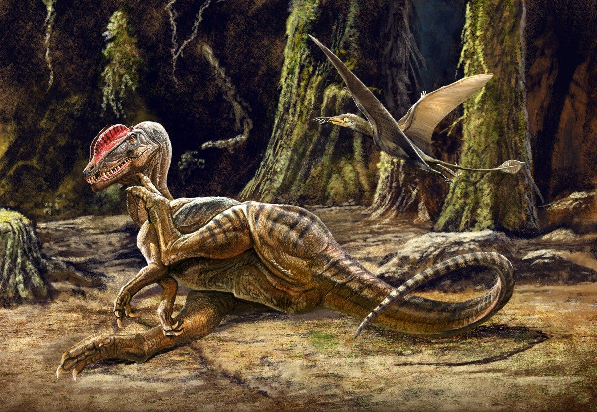Phân bố
Dilophosaurus là loài động vật sống trên cạn. Con quái vật này đã đi lang thang ở khu vực Châu Á và Bắc Mỹ. Hóa thạch của nó đã được tìm thấy ở những nơi như Telangana (Ấn Độ), Arizona và Arizona(Bắc Mỹ).
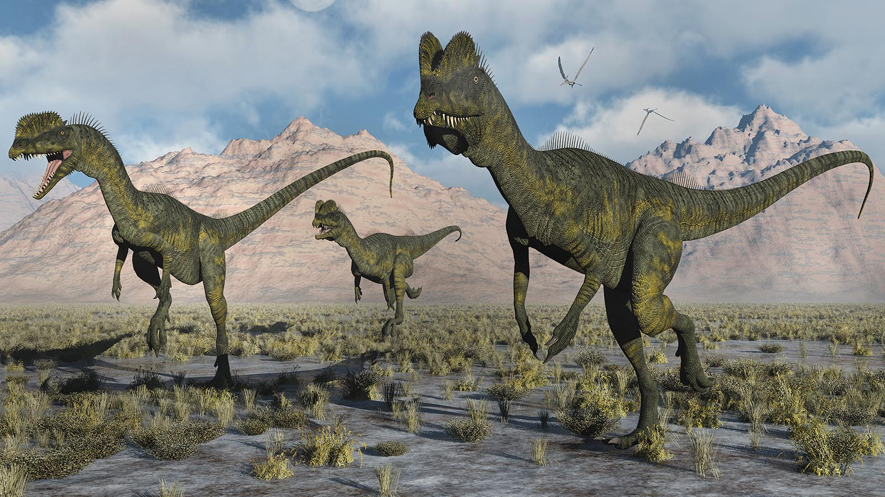Tên khoa học
Được đặt tên bởi Samuel P. Welles vào năm 1954. Dilophosaurus trong tiếng Hy Lạp di (δι) nghĩa là "hai", lophos (λόφος) nghĩa là "mào" và sauros (σαυρος) nghĩa là "thằn lằn", dịch ra là "Thằn lằn hai mào", một cái tên dùng để chỉ hai chiếc mào trên đầu của nó và tên loài Dilophosaurus Wetherilli vinh danh John Wetherill, một ủy viên hội đồng Navajo.
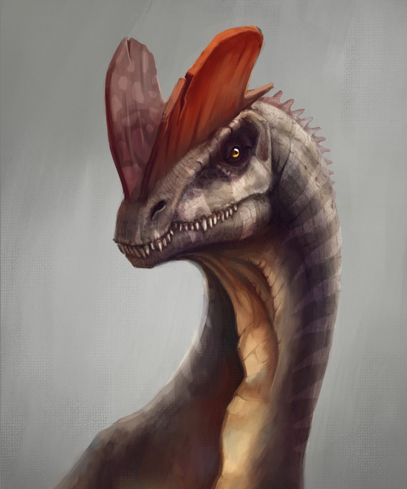Kích thước
Dilophosaurus có chiều dài khoảng 6-7 mét, trọng lượng khoảng 350-440 kg và cao tương đương 1.8 mét. Mặc dù thường được coi là một loài khủng long nhỏ bé, nhưng Dilophosaurus là một trong những loài khủng long đầu kỷ Jura lớn nhất Bắc Mỹ. Tuy nhiên, nó vẫn nhỏ hơn một chút so với những con khủng long chân thú xuất hiện sau nó.
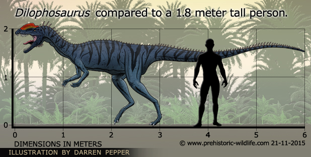Ngoại hình
Dilophosaurus là một loài hoạt động và đi bằng hai chân, mảnh khảnh với thân hình nhẹ và hộp sọ tương đối lớn, nhưng tinh tế. Mõm hẹp, và hàm trên có một khoảng trống hoặc kẽ hở bên dưới lỗ mũi. Nó có một cặp mào hình đĩa dọc trên đầu sọ, tương tự như loài đà điểu đầu mào nhưng với hai đỉnh. Xương hàm dưới mảnh mai và tinh tế ở phía trước, nhưng sâu ở phía sau.
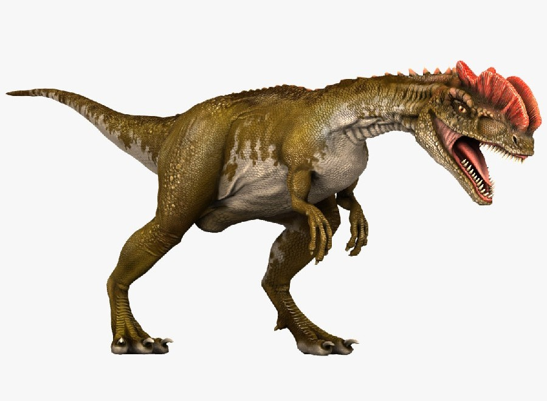Răng dài, cong, mỏng và bị nén ngang. Những cái ở hàm dưới nhỏ hơn nhiều so với hàm trên. Hầu hết các răng đều có răng cưa ở phía trước và sau của chúng. Cổ dài, và đốt sống rỗng, và rất nhẹ. Các chi cánh tay rất mạnh mẽ, với một xương cánh tay dài và mảnh mai. Bàn tay có bốn ngón tay: đầu ngón tay ngắn nhưng mạnh mẽ và mang một móng vuốt lớn, hai ngón tay sau dài hơn và mảnh hơn với móng vuốt nhỏ hơn, và ngón thứ tư là di tích. Xương đùi rất lớn, bàn chân mạnh mẽ, và ngón chân mang những móng vuốt lớn.
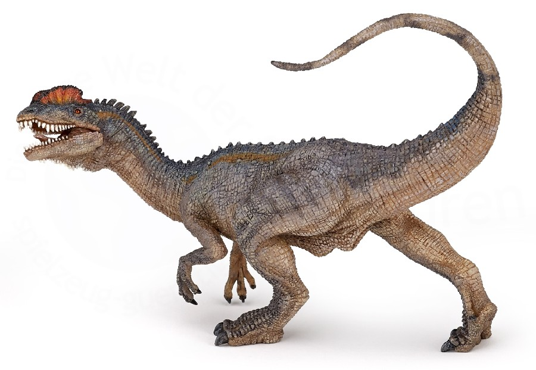Chế độ ăn và săn mồi
Dilophosaurus là một trong những loài ăn thịt lớn nhất của Bắc Mỹ trong thời kỳ đầu kỷ Jura. Tuy nhiên, kẻ săn mồi nguyên thủy thiếu nhiều đặc điểm săn mồi tiên tiến mà loài khủng long sau này có. Ví dụ, nó không có mắt hướng về phía trước. Loài khủng long này chủ yếu dựa vào khứu giác mạnh mẽ để bù đắp cho việc thiếu tầm nhìn này.
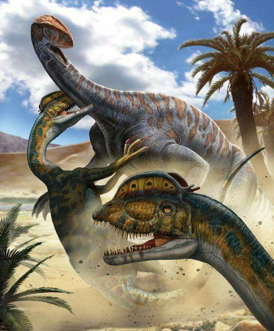Trong khi nhiều nhà khoa học giải thích cấu trúc hàm của chúng là yếu và xem chúng là ăn xác thối chứ không phải động vật ăn thịt. Tuy nhiên các bằng chứng khác lại cho thấy điều ngược lại. Ví dụ, khi tấn công con vật, nó sử dụng móng vuốt sắc nhọn và cánh tay khỏe để giữ con mồi trong khi cắn. Một nếp gấp ở hàm trên của con khủng long cho thấy nó có thể giữ chặt con mồi đang vùng vẫy một cách hiệu quả. Dilophosaurus đi bằng hai chân, nhưng nó có khả năng di chuyển rất nhanh. Các chuyên gia cho rằng nó có thể đã săn mồi theo nhóm nhỏ.
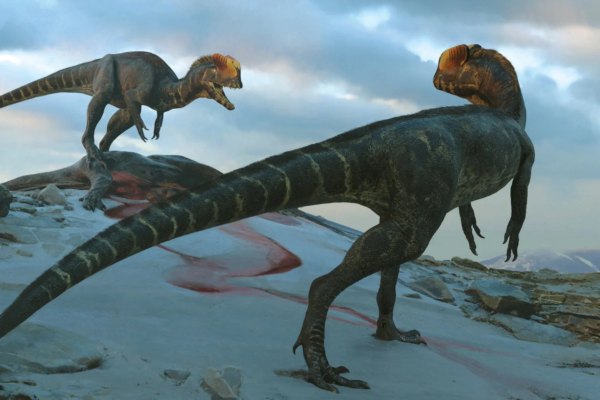Khám phá
Năm 1940, một người địa phương ở Navajo đã phát hiện ra những mẫu vật Dilophosaurus đầu tiên gần thành phố Tuba, Arizona. Các nhà cổ sinh vật học cũng đã thu thập được hai hóa thạch được bảo quản tốt từ địa điểm này.
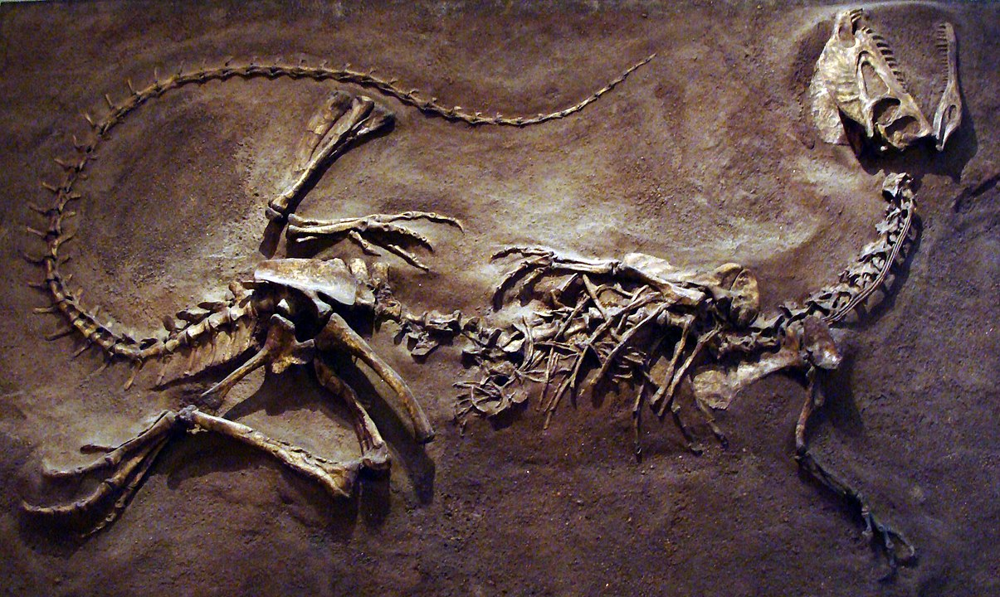Năm 1954, Samuel P. Welles gán loài này vào chi Megalosaurus và đặt cho nó cái tên cụ thể là " wetherilli " để vinh danh John Wetherill, một ủy viên hội đồng Navajo. Mười năm sau, Welles tìm thấy một bộ xương lớn hơn và chi tiết hơn cho thấy loài này có hộp sọ mào. Dựa trên khám phá này, ông đã gán lại loài này cho một chi mới Dilophosaurus.
Dilophosaurus phiên bản điện ảnh
Trong bộ phim "Jurassic Park" - "Công viên kỷ Jura" năm 1993, Dilophosaurus dài hơn 6 mét và cao gần 2 mét đã được đội ngũ sáng tạo của Stephen Spielberg thu nhỏ lại để chui vừa vào một chiếc xe jeep. Ngoài ra, họ còn tạo cho Dilophosaurus một cái diềm cổ giống như mũ trùm đầu — tương tự như diềm mà loài thằn lằn hiện đại sử dụng để xua đuổi kẻ thù. Sau khi mở phụ kiện này ra, Dilophosaurus giống như một con rắn hổ mang phun nọc độc vào mắt của nam diễn viên đóng vai Nedry.
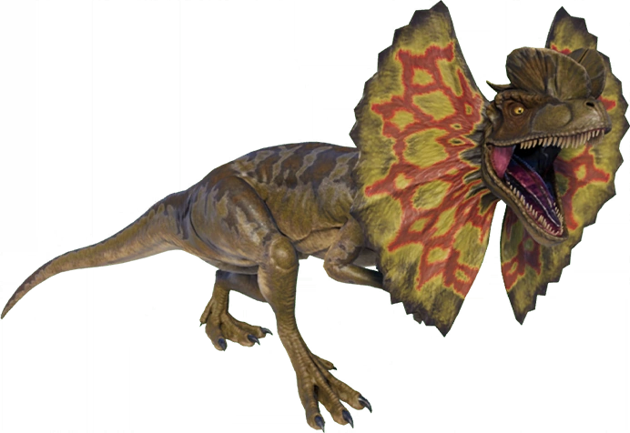Sự tuyệt chủng
Dilophosaurus đã tuyệt chủng từ khoảng 183 triệu năm trước. Rất có thể chúng đã cai trị lục địa Bắc Mỹ trong hàng triệu năm mà không bị thách thức. Là một loài săn mồi đỉnh cao và không có loài động vật đương đại nào có thể đứng vững như một thách thức đủ lớn với chúng. Phải mất hàng triệu năm trước khi những kẻ săn mồi lớn hơn như Allosaurus và Tyrannosaurus rex trẻ hơn xuất hiện, và Dilophosaurus có lẽ đã biến mất từ lâu vào thời điểm này. Nhóm khủng long theropod bắt đầu suy giảm khoảng 170 triệu năm trước trong kỷ Jura muộn. Quá trình chính xác của sự suy giảm của chúng vẫn còn là một ẩn số.
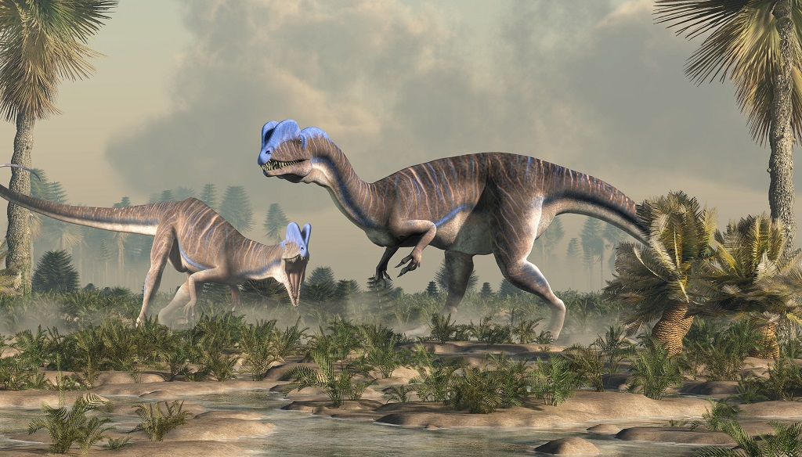